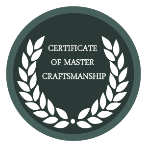

Our Service Centre Credentials

British Horological Institute approved service centre

Certificate of Master Craftsmanship
All work carries a further 12 month guarantee
British Horological Institute approved service centre
Certificate of Master Craftsmanship
All work carries a further 12 month guarantee
Here are a few points to take into consideration when a customer brings a Rotary repair into store:
One online repair form per watch - If specific work is required/ stated on the repair form, Rotary will action
Please describe the fault in as much detail as possible
Previous work undertaken by Rotary’s service centre also carries a 12 month guarantee. The invoice constitutes the guarantee, so in this case please send a copy of the old invoice
If no paperwork regarding proof of purchase is posted with the watch repair – we will process as a chargeable repair
If the service centre receives a package with a damaged watch which has been caused by anyone other than Rotary – Rotary will re-quote for required work
Please ensure the guarantee cards issued are all 2 + 1 guarantee – Each guarantee card needs to be stamped with; model number, and relevant stamp. This enables Rotary to process guarantee repairs quicker.
Rotary can offer a 10 day turnaround time from receipt to dispatch of a watch. Please note that this does not include any postage times to or from Rotary. The times are stated for the Rotary Service Centre only – any additional time that the watch is likely to be kept by the retailer would also need to be added on. The 10 days does not include any time taken for estimates or any offers to be approved by the customer.
Do Rotary charge for extra links?
Rotary does not charge for extra links unless the model is made of precious metal
Can customers use their own repair forms rather than a Rotary repair form?
Yes, customers can use their own repair forms
The customer has lost their guarantee?
If the guarantee is lost a sales receipt will suffice
The guarantee has expired?
If the guarantee has expired the work is chargeable
The watch is out of guarantee by just a few days?
If the watch is out of guarantee by a couple of days depending on the nature of the repair sometimes we are lenient
The watch is a very old model – do Rotary carry spares?
We carry spares for quite a few older models
Rotary does not have the spare parts for an old or obsolete model?
If we do not have spares and the watch is over 10 years old we can offer a replacement model at a discounted price
In the event that the watch cannot be repaired and the customer is offered an alternative, does Rotary return the original watch as well as the replacement?
We do not return the original watch if we are exchanging the watch
The customer thinks that the watch has been damaged during its time at the Rotary service centre?
We note the condition of the timepiece (i.e. scratches etc) at the time of receipt and in the unlikely event we mark a watch whilst in our possession we would put the matter right before it is returned
If the watch has clearly been misused – left in the washing machine
If the watch has clearly been misused and the damage is not of a manufacturing nature, we would send an estimate for the remedial work
Wrist Measurement:
1. Wrap the measuring tape around the wrist and slot through the hole
2. Tighten to customers desired comfort level
3. Bend back the tape to form a mark on the tape
4. Always put the tape upright so you can see the size your are bending to
Identifying bracelet and pins
1. Turn the watch upside down so that it faces down
2. If the bracelet has arrows on the back, it is features either: a split pin or and pin & collet
3. Turn bracelet and check both sides of the bracelet:
4. If you see a screwhead with a groove on one side of the bracelet, it is a split pin
5. If you see a plain pin on both sides with no groove, it is a pin & collet
How to adjust a split pin bracelet:
How to adjust a pin & collet bracelet: